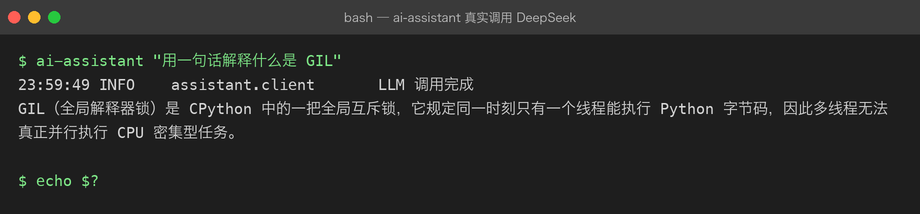
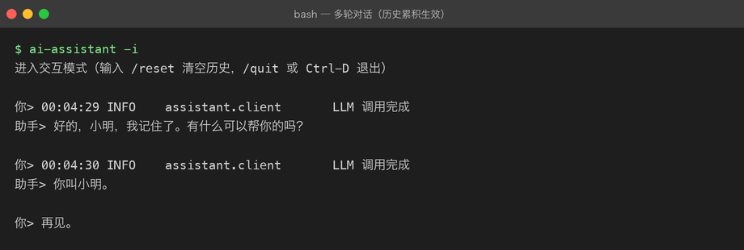
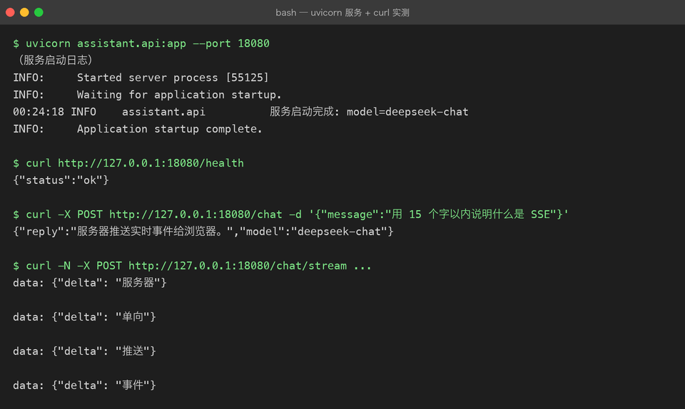
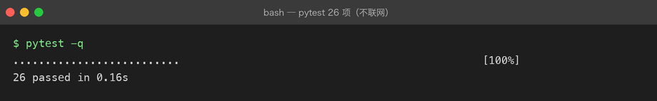

Project 02 — Engineering AI Assistant
项目目标
在 Project 01 的基础上，把 CLI Assistant 从 Python Script 工程化为真正的 Python Application。
为什么做这个项目
Project 01 证明了 Python 能调用 LLM，但代码还是脚本级的：没有虚拟环境、没有测试、没有异步、没有类型提示、没有 FastAPI。这些问题不解决，项目无法继续扩展。
解决什么问题
- 脚本级代码无法维护、无法协作、无法部署
- 同步 HTTP 无法处理高并发 AI 请求
- 没有类型提示，项目一大就容易出错
- 没有日志和测试，改了代码不知道会不会坏
最终能力
Python Script
↓
Python Application
↓
可维护 AI 服务技术栈
asyncio/aiohttp或httpx（异步 HTTP）typing/dataclasses（类型安全）logging（标准日志）pytest（测试）FastAPI（Web 框架）uvicorn（ASGI Server）
项目演进
Python AI CLI Assistant（v1.0，同步脚本）
↓ v0.1 — async / await
Python AI CLI（异步版）
↓ v0.2 — 类型提示 + dataclass
↓ v0.3 — config / logging
↓ v0.4 — packaging
↓ v0.5 — FastAPI 服务
Engineering AI Assistant ServiceMilestones
| # | Milestone | 状态 | 核心能力 |
|---|---|---|---|
| — | 总纲：从 Script 到 Application | ✅ | 为什么要工程化 + 10 章路线 |
| 00 | Classes and OOP | ✅ | class / self / 构造函数 / 继承 / 封装 |
| 01 | Async / Await | ✅ | asyncio / coroutine / event loop |
| 02 | Async HTTP Client | ✅ | httpx / 连接池 / 超时 / 重试 |
| 03 | Type Hints | ✅ | typing / 泛型 / Protocol |
| 04 | Dataclass | ✅ | dataclass / frozen / field |
| 05 | Config / Environment | ✅ | .env / Settings / 依赖注入 |
| 06 | Logging | ✅ | logging / 级别 / 结构化日志 |
| 07 | Testing / Debugging | ✅ | pytest / Fake / fixture |
| 08 | Packaging | ✅ | pyproject.toml / src layout |
| 09 | FastAPI | ✅ | 路由 / Depends / SSE 流式 |
状态：✅ 已校对 · 📝 草稿待校对
当前状态
10 / 10 个 Milestone 全部有内容且已校对。
校对的口径（01–04 为迁移长文，共 4970 行）：
- 172 个 Python 代码块全部
ast.parse()通过（13 处报错经逐条确认均为有意的示意片段，如async def chat(...)） - 与真实
src/逐项核对类名 / 文件名，不一致处已在各章开头补「本章 ↔src/对照」块 - 例如 04 章练习里的
LLMConfig/ChatSession，真实代码里是Settings/Conversation（见该章对照表）
历史遗留已修复：
00-classes-and-oop.md原为「项目总纲 + Chapter 01」混装 → 总纲拆出为OVERVIEW.md，Chapter 01 归位为01-async-await.md，00 重写为真正的 classes/OOP01-async-await.md装的其实是 Chapter 02 → 已重命名为02-async-http-client.md05/07原为 39 行占位空壳 → 已补写完整
当前版本
v0.2 — async CLI + FastAPI 双形态已落地并真实调通：
ai-assistant "问题" # CLI 形态
uvicorn assistant.api:app --port 8000 # 服务形态（/chat、/chat/stream SSE、/health、/docs）运行效果
以下全部来自真实运行（33 项 pytest 不联网，LLM 调用为真实 API）：

多轮对话——第二轮能记住第一轮说的名字，说明 Conversation 的历史累积生效：

FastAPI 服务三端点实测（/health、/chat、/chat/stream SSE）：

测试全程用 FakeClient，不联网、不花钱、半秒跑完：

项目结构
projects/02-engineering-ai-assistant/
├── README.md # 本文件
├── OVERVIEW.md # 总纲：为什么要工程化 + 10 章路线
├── milestones/ # 00 - 09 共 10 章
├── src/assistant/ # 工程化代码（async CLI + FastAPI）
├── tests/ # pytest（用 Fake 对象，不联网）
├── pyproject.toml # 打包配置（src layout）
└── .env.example # 配置键清单（.env 不进 git）下一步
按 Chapter 00 → 09 的顺序落地 src/：
client.py/conversation.py/service.py—— 分层 + 抽象基类（00）- 把
chat()改异步，用 httpx 连接池（01、02） settings.py收敛配置、logging_setup.py替换 print（05、06）tests/用 FakeClient 覆盖业务逻辑（07）pyproject.toml打包出ai-assistant命令（08）api.py加 FastAPI + SSE 流式（09）
已掌握能力
- Project 01 的所有 Python 基础
- 真实 LLM API 调用骨架
学习进度（与内容生产分开）
文档就绪 ≠ 已学习，参考答案跑通 ≠ 我会了。 这份 README 记录的是「仓库里有什么」， 「我到底学会了没」看 LEARNING.md —— 那里每章有自测题、动手验证与自评， 所有状态默认 ⬜，是否打勾只能由你本人决定。
- LEARNING.md —— 10 章自测清单（问答 + 判分要点 + 自评）
- exercises/ —— 29 道实操题 + 参考答案 + 离线判卷工具
projects/02-engineering-ai-assistant/README.md